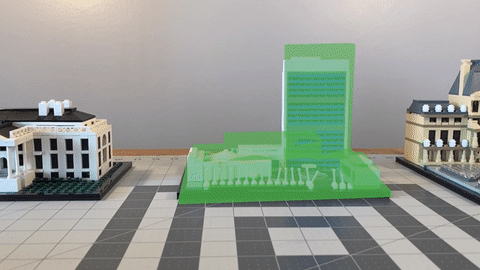
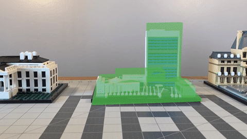

CREATING THE EXPERIENCE
 

The code for Augmented Architecture was written in Swift using Xcode. The git repo for the project is available here.
The demo uses standard iOS libraries including ARKit, SceneKit, SpriteKit, and AVFoundation.
3D Assets were created in Blender, then exported as COLLADA (.dae) files. These were converted to SceneKit scene descriptions (.scn) in Xcode.
Simple videos for the project were created using iMovie, then imported to the scene as SpriteKit video nodes.
TARGET OBJECTS
Because minimal UI friction was a priority for this project, I needed to create AR target definition files (.arobject) for each building model. These were created using a slightly-modified version of Apple’s AR Scanner example app.
MODEL OCCLUSION
Maintaining a realistic sense of physicality in virtual objects is one of the most important design considerations for augmented reality experiences. And one of the most important aspects of realism is occlusion: objects in the physical world need to realistically block virtual objects behind them.
Unfortunately, this can be a difficult task; ARKit isn’t yet capable of automatically handling occlusion of objects. So I had to add it to my experience itself.
This required creating 3D models of each of the buildings used in the experience. These models are aligned to their physical counterparts in the ARKit scene, and given special ‘holdout’ materials in SceneKit. This special holdout material prevents the ARViewController’s renderer delegate from showing any content that overlaps with the occlusion models.